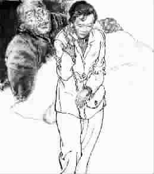

父爱的深度
●风为裳
一
我跟杨炎结婚八年，没见过公公。开始我以为杨炎是怕我嫌弃那个家，不肯带我回去。于是我积极表态：选了你，就做好了接受你的父母的准备，无论他们是穷是富，是老是病。杨炎握着我的手，含情脉脉，却不说话。
有一次，我甚至买好了三张去他家的车票，兴冲冲地摆到他面前，说：“冲儿都5岁了，也该见见爷爷奶奶了。”却不想杨炎的脸一下子拉得老长，把车票撕得粉碎。杨炎鼻子不是鼻子脸不是脸地说：“冲儿没有爷爷，我也没有爹。”回手，他把一个杯子摔到了地上。我从没见过他生那么大的气。
我沉默着把收拾好的包打开，把给公公婆婆买的礼物扔进了垃圾箱。那个晚上，我睡在了冲儿的床上。
杨炎从农村出来，我知道他不是个忘恩负义的人。每年过年过节，他都要买很多东西寄回家里。每次打电话，他都说：娘，来城里住些日子吧！娘去了哥哥姐姐家，他总心急火燎地奔过去。看得出他想家，却从不提回家的事。杨炎也从来不提爹。我不知道他们之间到底有什么解不开的心结。
第二天是周末，杨炎把冲儿送到姥姥家。他回来接过我手里正洗的衣服，第一次跟我说起我从未见过面的公公。
二
杨炎是家里的老三，他有一个哥哥，一个姐姐，都上了大学。这我是知道的。从前我总说：咱爹咱娘真的很伟大，农民家庭供出三个大学生，那得受什么样的煎熬啊！那时，杨炎总是一口接一口地抽烟，不接我的话。
杨炎上初三那年，姐姐继哥哥考上大学后，也考上了本省最好的师范学校。收到录取通知书那天，全家人都在侍弄那二分烤烟地，阳光明晃晃的，把家里人的心情都晒得焦躁。姐姐带着哭腔说：我不去了，我去深圳打工，供小炎上学。
爹重重地把手里的锄头摔在地上：“不上学，也轮不到你！”
他抬起头，说：“姐，我16 了，我不念了。”母亲在一边抹眼泪。哥哥蹲在地边，有气无力地说：“我再找两份家教，咱们挺挺，我毕业就好了。”
家里东凑西凑还是没凑够姐姐的学费。爹抬腿出去，回来时，手里攥着一把崭新的票子。他把马上就可以卖好价钱的烤烟地贱卖给了村里的会计。娘说：“就这点地都卖了，咱往后吃啥喝啥？”爹说：“实在不行，就让老疙瘩下来。”或者爹只是那样一说，杨炎却记在了心里。尽管他说了不念书的话，但这话从爹的嘴里说出来，他的心里很不是滋味。
姐姐上学走了。爹出去帮人家烤烟叶。爹的手艺好，忙得不可开交。杨炎却因为爹的那句话，学习上松懈下来，反正早晚都是辍学的命，玩命学又怎么样？很快，他便跟一帮社会上的孩子混到了一起。
直到有一天，他跟那些所谓的“朋友”去水库玩了一天回到家时，看到爹铁青着脸站在门口等他。
见了他，爹上来就给了他一巴掌：“既然你不愿意上学，那好，从明天起你就别上了，跟你三舅去工地上做小工！”
他瞪着爹，心里的委屈一下子涌上来，他喊：“凭什么让他俩上学，不让我上？”
爹说：“因为你是老疙瘩，没别的理由。”
他梗起脖子，说：“不让我上学，我就不活了。”杨炎是个说到做到的人。他整整饿了自己5天，娘无奈地找来了村里的叔叔伯伯。爹说：“想上学可以，打欠条吧，你花我的每一分钱，你都给我写上字据，将来你挣钱了，都还给我。我和你娘不能养了儿子，最后还谁都指望不上。”
他坐起来，抖着手写好字据。他咬牙切齿地说：“你放心，我一分一厘也不会欠你的。”
那晚，他跑到村东头的小河边哭了一夜。爹一定不是亲的，否则，怎么会如此对他？人家的老儿子，不都是心头肉吗？
三
他上学后，很少回家。可是爹却总是以各种各样的理由叫他回家帮他干活。烤烟要上架，他一个人干不过来，要杨炎回家帮忙。麦子黄了，不及时收割会掉粒，还要杨炎回家抢收。杨炎咬着牙，拼命地干活，他想考上大学就好了。离开这个家，也就算逃离苦海了。
那次割豆子，杨炎一镰刀下去，割伤了腿。娘给他抹药时，他问：“娘，我是你们要来的吧？”
娘叹了口气，说：“别怪你爹，他也是被逼得没法儿了，他怕你们都走了，孤得慌。”
他看了看正在院子里侍弄那半垄萝卜的爹，说：“人家的父母砸锅卖铁都供孩子上学，哪像他，一天只知道钱钱钱。他一天到晚净干那没用的。”
爹每年都要在院子里种半垄萝卜，也许是土质不好，萝卜全都很小很小，几乎不能吃，全家人只能喝味道很难闻的萝卜缨子汤。
娘还当好东西一样，把萝卜缨子晒干，给他泡水喝。想想他就有气。
上高中时，哥哥毕业上班了，姐姐的生活费也可以自理了。按理说家里的条件好了很多，爹应该对他松一点了。
可是，每次他回家拿生活费、资料费，爹都郑重其事地掏出那张欠条，让他把钱数记在后面，签上名字、日期。每次写这些时，他都会咬紧牙关，然后把对爹的感情踩在脚底下。
那年临近高考，家里的麦子又黄了。爹捎信给他，让他回来割麦子。他终于没忍住，回家跟爹大吵一架：“你就不能割，干啥偏指着我呀？”
爹狠狠地磕掉烟袋里的烟灰，不紧不慢地说：“养儿防老，我不靠你靠谁？”
他没黑夜没白天地割了三天麦子，麦子割完，他头也不回地回了学校。
那年高考，他考了全乡最高分。他给哥哥姐姐写了封信，信里说，他不指望爹能供他上大学，希望他们可以借他一点钱，这些钱将来他都会还。信里面写得很决绝，那时，他的眼里只有前程，亲情于他，不过是娘的一滴滴眼泪，一点用处也没有。
上大学走的那天，他噙着泪离家，甚至没跟爹打声招呼。他已经很多年没叫他爹了。在他眼里，爹更像是一个债主，有了他一笔笔债压着，杨炎才能使劲地往外走。杨炎吸了一口烟说，我能有今天，也算拜他所赐！
走到村口，杨炎回头看家里低矮的土房，一不小心看到站在门口的爹，他手搭凉棚向他离家的方向望。杨炎转过头，心变得很硬很硬。
杨炎说：“小云，第一次去你家，你爸给我剥橘子，跟我下象棋，和颜悦色地说话，我回来就哭了一场。这样的父亲才是父亲啊。”说完，他的眼睛又湿了。
我不知道那位未曾谋面的公公为何会以这样无情的方式对待自己的儿子，难道贫穷把亲情都磨光了吗？
杨炎从一本旧书里找出一张皱皱的纸，我看见上面密密麻麻记着好些账，下面写着杨炎的名字。杨炎说：“还清了这张纸，我就不欠他什么了。”
四
我看得出杨炎不快乐，他对冲儿极其溺爱，他不接受别人说冲儿一点点不好，就连我管冲儿，他都会跟我翻脸。我知道杨炎的心里有个结。
跟单位请好假，我对杨炎说要出差几天，然后去了杨炎的老家。
打听着找到杨炎家，尽管有了心理准备还是吃了一惊。家里三个在城里工作的儿女，都寄钱回来，怎么他们还住着村里最破的土坯房？看来杨炎说的公公爱钱如命果然不假。
院子里还有半垄杨炎说的萝卜地。每年婆婆还是会寄些晒干的萝卜缨给我，嘱咐我泡水给杨炎喝。我嫌那味道太难闻，总是偷偷扔掉。
婆婆出来倒泔水，看到我，愣了一下，说：“你怎么来了？”我和杨炎结婚时，婆婆去过。
把我让进屋，昏暗的光线里，我看到佝偻在炕上的老人。他挣扎着起来。婆婆说：“这是小云，杨炎家的。”公公哦了一声，用手划拉了一下炕，说：“走累了吧？快坐。”
他没有想象中凶神恶煞，感觉他只是个慈祥的乡下老头。
我说：“爹，你咋了？”婆婆刚要说，公公便给她递了个眼色，说：“没啥，人老了，零件都不好使了。”婆婆抹了抹眼睛，开始给我张罗饭。
帮她做饭的当儿，婆婆问起杨炎和冲儿。我用眼角的余光看公公，他装作若无其事，可我知道他听得很仔细。
跟婆婆出去抱柴，我说：“杨炎还在记恨爹呢！”
婆婆的泪汹涌而出。她说：“都说父子是前世的冤家，这话一点不假。你爹那个脾气死犟，杨炎更是八头牛都拉不回来。
“其实，最疼小炎的还是你爹。你看这半垄萝卜，你爹年年种，就是家里再难的时候，也没把它种成别的。就是因为杨炎内虚，有个老中医说萝卜缨泡水能补气，你爹就记下了。年年都是他把萝卜缨晒好了，寄给你们，然后让我打电话，还不让我说是他弄的……”
“那为什么爹那时那样对杨炎呢？”
婆婆叹了口气。
“那时候杨炎在外面交了不三不四的朋友，你爹若不用激将法，怕是那学他就真的不念了。每次找他回来干活，都是你爹想他，又不明说，谁知那孩子犟，两个人就一直顶着牛……
“你爹的身体不行了，动哪哪疼，可是他不让我跟孩子说，他说，他们好比啥都强，想到他们仨，我就哪都不疼了。他说什么也不肯看病，小炎给的那些钱，他都攒着，说留给冲儿上大学……”
我的眼睛模糊了。父爱是口深井，儿子那浅浅的桶，怎么能量出井的深度呢？
婆婆说：“他每天晚上梦里都喊儿女的名字，醒了，就说些他们小时候的事。他说，孩子小时候多好，穷是穷点，可都在身边，叽叽喳喳的，想清静一会儿都不行……”
我站在村口给杨炎打手机，我告诉他：父亲的爱像右手，它只知道默默地给予，却从不需要左手说谢谢……
(司志政摘自《妇女》2006年12 月，何保全图)